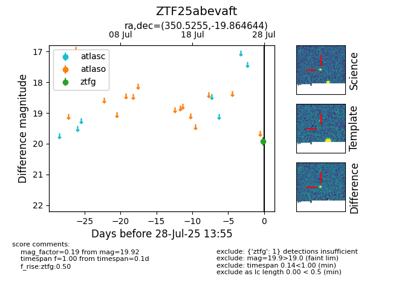

Target ZTF25abevaft at 2025-07-28 13:55, see:
FINK: fink-portal.org/ZTF25abevaft
Lasair: lasair-ztf.lsst.ac.uk/objects/ZTF25abevaft
ALeRCE: alerce.online/object/ZTF25abevaft
alt names
ZTF25abevaft (ztf,fink)
coordinates:
equatorial (ra, dec) = (350.5255,-19.86464)
galactic (l, b) = (47.7075,-68.30810)
photometry
last ztfg=19.92
1 ztfg detections
